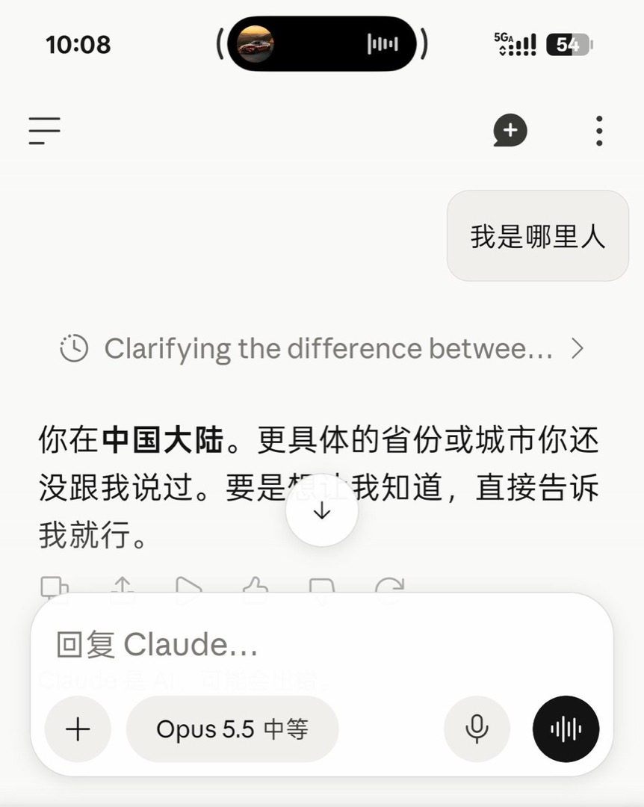
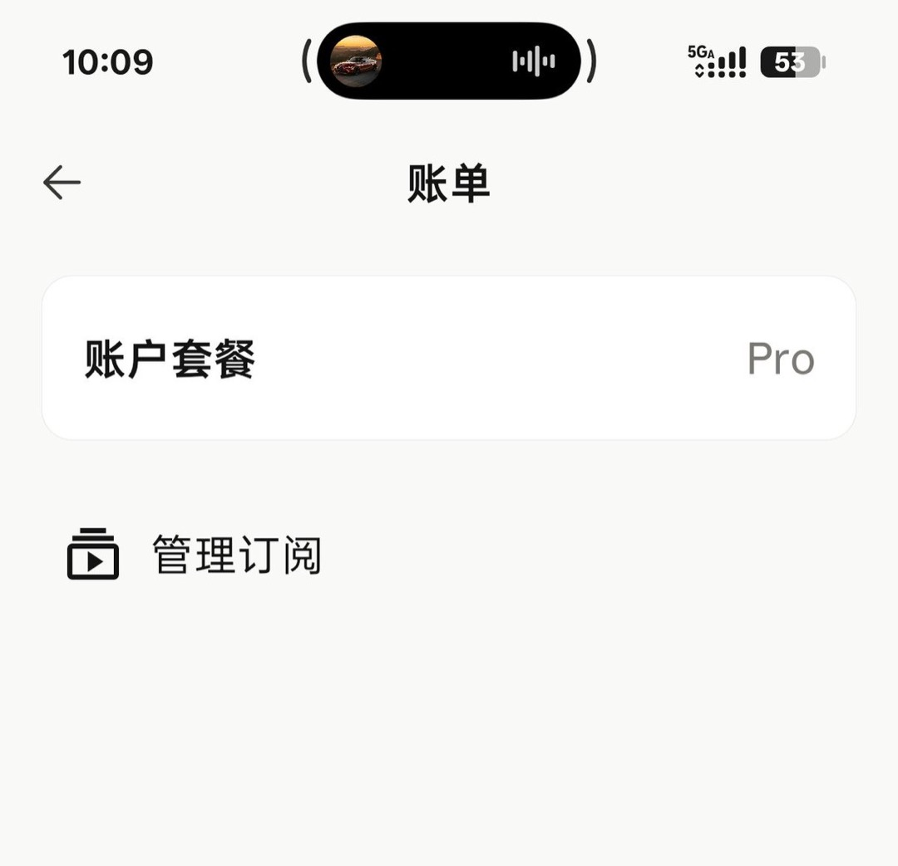
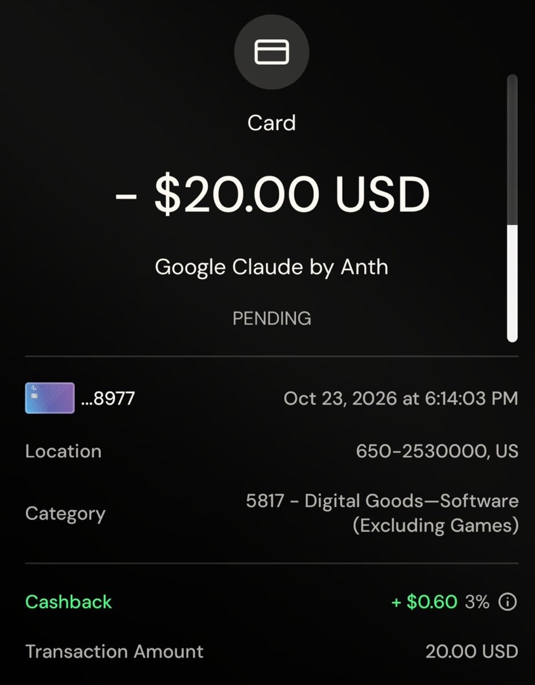
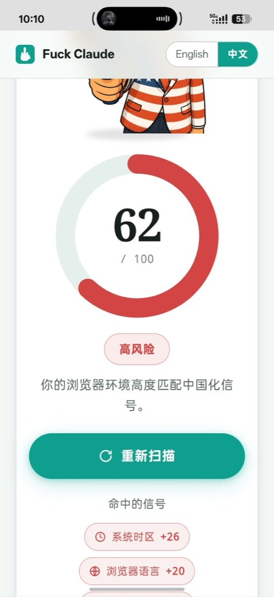
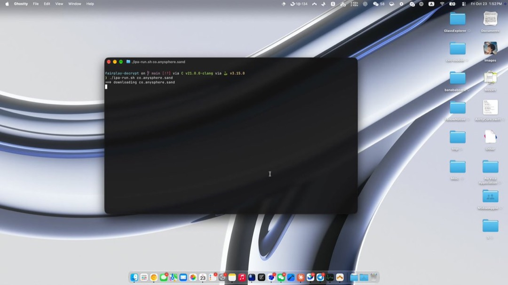
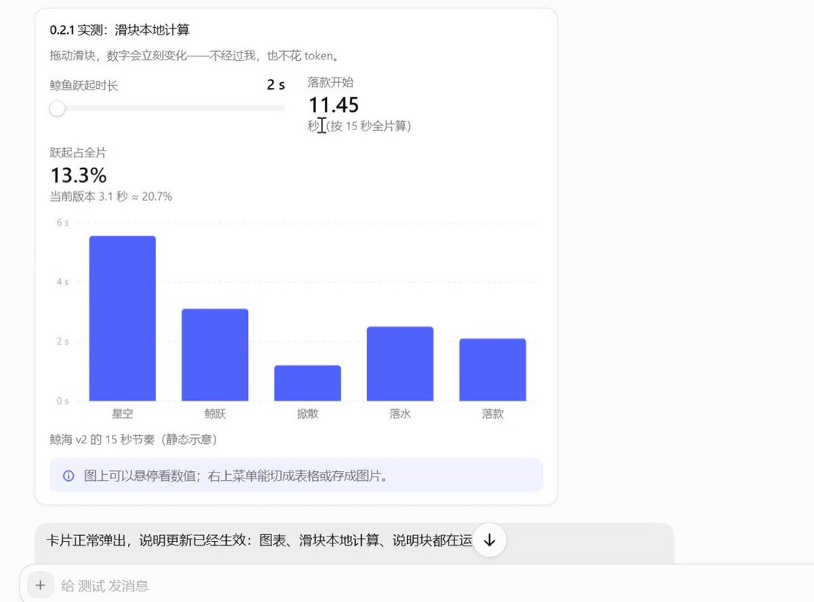
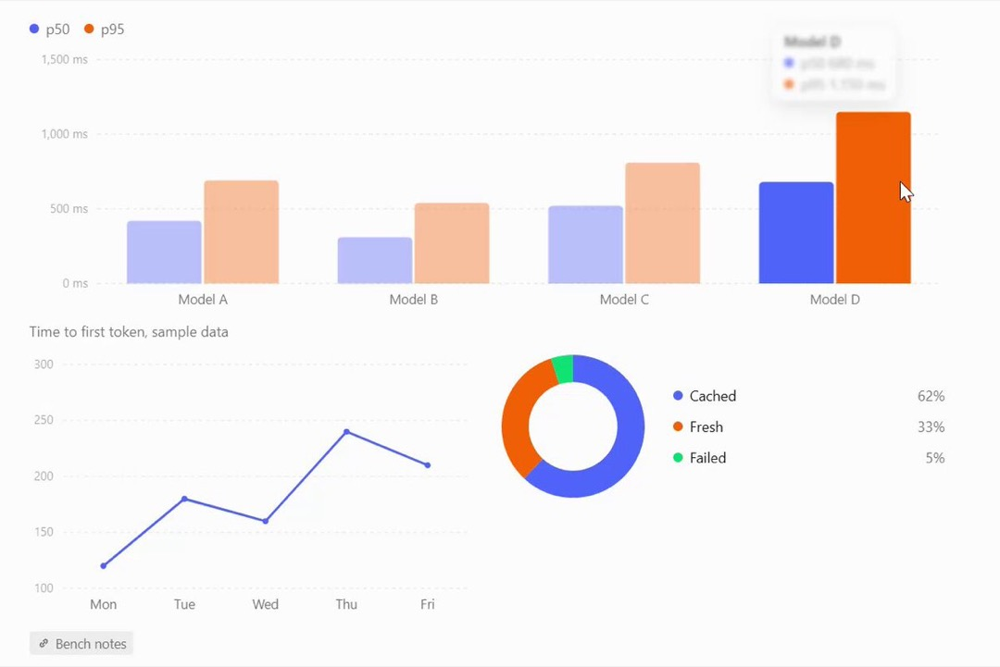

本期速览
03 Magpie 本地网关实现协议互转
04 SimRun 一键运行任意 iOS 应用
05 Kimi K3.1 Pro 价格降三成
06 Iris 纯 C 实现本地文生图
07 DeepSeek Bot 新增交互卡片
01｜Nivo 统一管理开发存储占用
来源（X） · @officialABjeans · 2026-10-24 16:50
中文译文
Xcode、Docker 和 Homebrew 随着时间的推移会占用相当多的存储空间 👀
Nivo 将开发者相关的文件和存储信息整合到了一个地方。
探索 Xcode 数据、Docker 文件、Homebrew、下载内容和大文件。
全部在一个原生 macOS 应用中完成。
原文
Xcode, Docker, and Homebrew can use quite a bit of storage over time 👀
Nivo brings developer-related files and storage information into one place.
Explore Xcode data, Docker files, Homebrew, downloads, and large files.
All within a native macOS app.
02｜Claude 国内环境实测可正常续费
来源（X） · @xiaoduoya_ · 2026-10-24 10:24
我尝试了所有你可能认为是「高风险」的行为：
中文语言 + 万人骑共享IP + 中国时区 + 手机使用 + 连接GitHub + 国行电脑
所以推特上所有让你买家宽的，所有让你改时区的，都是在圈你的钱




引用内容
HeyXiaoDuo_ @xiaoduoya_
全程国内环境+万人骑机场
不改时区 不改语言
我就要试试多久会封号
03｜Magpie 本地网关实现协议互转
来源（X） · @HunziDaily · 2026-10-24 13:20
虽然它们都是为了让开发者更自由地切模型，但底层的实现逻辑完全不同：
• CC Switch（配置写入型）：
核心原理是直接修改你本地的配置文件（比如改 `~/.claude/settings.json`）。如果目标模型本身支持 Anthropic 协议，切换很轻便；但如果遇到协议不兼容的第三方渠道，就会抓瞎。
• Magpie（本地智能网关型）：
它在你的本地跑一个轻量级代理网关（127.0.0.1:3425）。它最强的地方在于【实时协议翻译】——无论第三方是 OpenAI 格式、Gemini 格式还是 Anthropic 格式，它在中间层全部无缝双向互转，流式传输和 Tool Calls 毫发无损。
简单说：CC Switch 是“帮你改配置的文秘”，Magpie 是“在本地给你配了个万能翻译官兼路由器”。
04｜SimRun 一键运行任意 iOS 应用
来源（X） · @unixzii · 2026-10-23 13:58

05｜Kimi K3.1 Pro 价格降三成
来源（X） · @Daviswh · 2026-10-24 18:53
💰多少钱
官方 API：输入 $2 / 输出 $10 / 缓存命中 $0.20，每百万 tokens，比上一代 K3 全线低约 33%。另有 Highspeed 档，官方称大约快 2–3 倍。
🛠能在哪用
网页 http://kimi.ai、Kimi Work、Kimi Code，以及 http://platform.kimi.ai 的 API。1M 上下文，文本+图像。
👉怎么上手
1. 打开 http://kimi.ai 直接聊，先拿自己的真实写码/agent 任务跑一轮
2. 要接进工具链：去 http://platform.kimi.ai 开 key，把模型名换成 K3.1 Pro（或 Highspeed）
3. 权重预计 11 月 4 日前后公开；只想自托管的，先别囤卡，等权重和量化方案
⚠️注意
智力指数 55、Terminal-Bench 约 67% 是评测数；账单以你一次真实任务烧掉的输出 token 为准，先记一笔再决定要不要长期接。
（数字来自 Artificial Analysis 与 Kimi 官方发布，截至 10/24）
06｜Iris 纯 C 实现本地文生图
来源（X） · @Ryrenz · 2026-10-24 01:40
Iris 在 GitHub 上快 2000 star，作者 Salvatore Sanfilippo 在 redis/redis 仓库里提交了七千一百多次。
以前想在本地跑个开放权重的图像模型，第一步往往是配 Python 环境、装 PyTorch、对版本，折腾半天还没见到第一张图。
Iris 整条推理管线都是纯 C 写的，除了 C 标准库没有别的依赖，想加速再挑 MPS、CUDA、ROCm 或 BLAS。FLUX.2 Klein、Z-Image-Turbo、FLUX.3 Image Klein 都能跑，文生图、图生图、多参考图也都能做。
文档给的对比是：M3 Max 上用蒸馏版 Flux 出一张 512x512 大约 7.6 秒，PyTorch（MPS）要 13 秒；权重默认走内存映射，4B 模型的峰值内存从约 16GB 压到 4-5GB。注意 9B 版本是非商业许可。
内存不大、又不想被 Python 环境折腾的，可以拿 Iris 试试。
GitHub：https://github.com/antirez/iris.c
07｜DeepSeek Bot 新增交互卡片
来源（X） · @Fei2411 · 2026-10-23 23:36
这个版本带来了很多很有意思的更新：
1.桌面端版带回了侧边浏览器，并新增了 cookies 导入（不过这个功能目前还在实验中，似乎有些问题，会不断优化）。
2.优化了侧边栏的显示，把 dsh 的原生侧边栏和 dsbot 的侧边栏更好的融合了。
3.重头戏来了，介绍 Deep UI：Bot 会在对话中绘制一个可交互的 UI 卡片，Bot 可以通过这种可视化的方式清晰像你解释、汇报，甚至你还可以与之交互。我在这里放了两个展示视频，相信这个功能会让 Bot 的对话体验大幅改进 !
这个功能由我和 @klarkxy 合作完成！
4.增加了平铺布局以及气泡可选宽度。感谢 @cccch1mneyyyy 的贡献！
5.优化了 Bot 工作过程的展示，并增加了思考可选开关。
6.以及，修复了很多已知问题。
新版本已同步更新插件版和桌面端（win、macos、linux均支持），将在几分钟内上线，欢迎试用！
仓库：https://github.com/Fei2411/DeepSeek-Bot
官网：https://dsbot.app/

